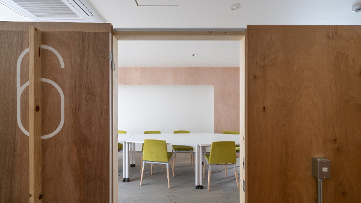

Tout le monde peut apprendre à coder!
De l'école primaire à l'université et au-delà ... Boostez vos connaissances techniques
Nos stages et activités extra-scolaires sont conçus pour Équiper les étudiants avec des compétences pratiques
Apprenez des meilleurs


Pourquoi Coder?
Une compétence essentielle
Il est desormais essentiel de savoir programmer, quelles que soient vos ambitions de carrière.
Coder, c'est comme lire au siècle précédent: c'est la nouvelle alphabétisation. .
Les pays du monde entier ont commencé à le reconnaître et ils ajoutent l'informatique au programme des écoles élémentaires.
En savoir plus >
Pas seulement Coder
Apprendre à programmer renforce les compétences scientifiques.
Les élèves acquerront également les compétences essentielles
telles que la logique et l'esprit critique, la capacité à aprehender des problèmes complexes, l’autonomie, le respect de la diversité,
la créativité, le travail d’équipe et la communication.
En savoir plus >
40% de tous les emplois perdus?

L'intelligence artificielle et l'automatisation mettent en péril un grand nombre d'emplois à tous les niveaux de qualification. Les emplois actuels seront remplacées par de nouveaux emplois nécessitant de nouvelles compétences.
Souhaitez-vous travailler avec l'I.A. ou en concurrence avec elle? Même avec des ingénieurs qui font le gros du travail pour vous, vous aurez toujours à comprendre en quoi consiste la programmation.
En savoir plus >
Curriculum
Junior Coders
2x 2 heures / semaine: ¥42,000 / mois
Web App Builders
2x 2 heures / semaine: ¥36,000 / mois
Data Science Explorers
2x 2 heures / semaine: ¥36,000 / mois
üá¨üáß Bilingue en Anglais
2x 2 heures / semaine: ¥25,000 / mois
Cours hebdomadaires
- 15h à 17h
- 16h à 18h
- 17h à 19h
- 10h30 à 12h30
- 13h30 à 15h30
- 15h30 à 17h30
- 16h30 à 18h30
Notre équipe

Avery
J'ai toujours eu une passion pour les langues, ayant étudié la linguistique et le japonais à
l'Université de Sydney.
J'ai écrit et interprété des comédies originales pendant plus de deux ans, et animée une stand-up comedy
d'une heure au Melbourne Fringe Festival 2019,
j'ai aussi co-écrit, réalisé et composé des productions théâtrales indépendantes pour la scène de Melbourne.
J'écris aussi des histoires, des poèmes et les paroles de mes compositions musicales depuis plus de 10 années.
J'aime plus que tout aider les enfants à trouver de nouvelles façons de s'exprimer,
quelle que soit la forme que cela puisse prendre.
Ma fascination pour tout ce qui est japonais m'a finalement conduit à Kyoto, où je suis ravi de
rejoindre Kyoto Lesson!

Alex
Apprendre à coder a été l'un des accomplissements les plus enrichissants de ma vie.
Il y a plusieurs années, j'ai appris Python par moi-même comme moyen d'automatiser les tâches répétitives.
En 2019, j'ai déménagé à Kyoto et participé à un bootcamp de coding pour adultes,
qui, d'ailleurs, était dans le même bâtiment que Kyoto Lesson! Après cela, j'ai enseigné aux étudiants
dans les classes suivantes et trouvé cette expérience incroyablement amusante.
Au cours de ma carrière, j'ai exploré la scène tech de la Silicon Valley et construit des accessoires de cinéma à Los Angeles.
Maintenant je me retrouve dans une startup à Kyoto, contribuant aux projets web de l'entreprise et
je fait du coaching en anglais pour notre PDG. J'aime travailler avec divers groupes de personnes et
leur donner les outils dont ils ont besoin pour réussir. À Kyoto Lesson, je souhaite partager ma soif d'apprendre et relever de nouveaux défis.

Ashley
J'ai toujours aimé enseigner. J'ai encadré des élèves quand j'étais au lycée et j'ai travaillé
dans une école de conversation anglaise depuis quatre ans.
L'enseignement est l'une de mes plus grandes passions, mais j'aime aussi l'art, le design, la littérature, la culture,
et les gens en général.
Je suis mi-japonaise et mi-américaine. J'ai grandi en Caroline du Sud jusqu'à l'âge de 13 ans et j'ai déménagé
au Japon pour le premier et le deuxième cycle du secondaire.
J'ai déménagé à Kyoto après avoir été accepté à l'Université Doshisha. J'étudie encore
sociologie là-bas tout en travaillant à temps partiel.
Pour moi, l'enseignement de l'anglais au Japon est trop academique et axe sur les examens.
Aprendre une langue doit être quelque chose d'amusant et je veux partager cela avec les enfants qui essaient d'apprendre
L'anglais au Japon.
Je suis ravie de travailler dans un tout nouvel environnement et de combiner étude et jeu.

Louis
J'étudie actuellement au Lycée Français International de Kyoto. L'informatique est l'une de mes matières principales.
Je suis français et japonais et parle couramment les deux langues. J'ai grandi en Europe et j'ai déménagé
à Kyoto il y a environ 10 ans.
J'ai une passion pour le football et les véhicules rapides. C'est seulement au moment où j'ai été en age de conduire que j'ai compris
à quel point les belles motos et voitures coutaient chères!
Et c'est l'une des raisons pour lesquelles j'ai décidé d'étudier par moi-même à la fois la finance et l'informatique,
deux domaines dans lesquels je pensais pouvoir rapidement monétiser mes connaissances et mon expertise.
Le point positif est que j'ai vraiment beaucoup aimé ces deux matières et depuis que je veux continuer à apprendre et
plus important encore, je souhaite également partager ces connaissances avec les autres. C'est ce qui m'a amené
à l'enseignement et j'ai hâte d'enseigner la programmation à d'autres étudiants aussi!

Kris
En grandissant, certains enseignants m'ont vraiment donné envie de devenir moi aussi enseignant.
J'ai donc étudié pour obtenir un double master en éducation de l'enfance et TESOL,
et après un voyage au Japon en 2012, j'ai su ce que je voulais pour mon avenir.
En ce qui concerne les enfants, je pense qu'ils peuvent tout réaliser et qu'ils ne sont limités que par
leur imagination et leur dynamisme. Je crois que mon rôle d'éducateur est d'aider
à libèrer leur potentiel et leur faire apprendre par le jeu,
les histoires, la musique, etc.
J'aime explorer et apprendre de nouvelles choses et je suis un peu un rat de bibliothèque. (J'étudie rigoureusement
J.R.R. Tolkien dans mon temps libre), et je suis également passionné d'arts martiaux,
de cinéma et de musique.
J'adore les nouvelles opportunités et je suis toujours à la recherche de moyens d’apprendre et d’améliorer les méthodes
pédagogiques pour accompagner la génération à venir, en lui donnant la confiance nécessaire pour devenir citoyens du monde
Tora
J'aime à la fois apprendre les langues et les enseigner en général. Je parle couramment l'Anglais et
le Japonais, et j'étudie également le Français et le Coréen car j'aimerais être
un orateur multilingue. J'ai eu une exposition à l'anglais depuis l'âge d'un an et j'ai
travaillé en tant que tuteur d'anglais et assistant au lycée au cours des quatre dernières années.
Je suis né à Saitama, mais j'ai grandi à l'étranger. J'ai passé quatre ans à Hong Kong, trois ans
en Inde et deux ans à Dubaï. J'ai déménagé à Kyoto pour le lycée.
J'ai étudié à Houston pendant un an dans le cadre d'un programme d'échange au lycée, et j'ai également étudié
à l'Université de British Columbia avant d'obtenir mon baccalauréat.
Je suis actuellement étudiant en quatrième année à l'Université de Ritsumeikan et je me spécialise dans les
relations internationales.
Parler est le moyen le plus important d'étudier l'anglais. La raison pour laquelle j'aime les langues vient
du fait que j'ai beaucoup de plaisir à avoir des conversations avec des personnes qui ont eu des experience différentes.
J'ai aussi hâte de partager mon expérience!

David
Je travaille avec des enfants depuis plus de 30 ans et je me concentre principalement sur le developpement de la créativité des enfants
et leur sens du jeu. J'ai également de l'expérience en informatique et plusieurs autres
domaines scientifiques. J'ai commencé à coder à l'âge de 10 ans et je fait parti de la première
génération de "petits génis de l'informatique".
Mon travail avec les enfants inclus l'enseignement parascolaire, le conseil sur les stages linguistiques et l'enseignemant en maternelle
aux États-Unis et au Japon. Mon expérience avec les ordinateurs comprend des applications en cobol, html,
javascript, entre autres. Je suis également actif en tant que personnel d'une société scientifique
Japon.
Je suis né et j'ai grandi en Europe, mais j'ai déménagé aux États-Unis à l'âge de 7 ans.
Je parle la langue des signes américaine, le français, le portugais et dans une moindre mesure le japonais.
Je vis avec ma femme et ma fille à Kyoto.

Alan
Je pense que la programmation est une compétence essentielle que tous les enfants devraient acquérir, dès
leur plus jeune age.
Ainsi, un peu apres que nous ayons déménagé à Kyoto avec ma femme et mes quatre enfants, je me suis mis a la recherche d'une bonne
école de programmation pour mes enfants. Je voulais une école où les enfants pensent par eux-mêmes et
apprennent en faisant.
Comme je ne trouvais rien de satisfaisant, j'ai décidé de prendre les choses en main et
de lancer ma propre école de programmation.
Et c'est ainsi que Kyoto Lesson est née.
Je suis Français et j'ai étudié aux États-Unis. Avant de déménager à Kyoto, j'ai travaillé comme
trader pendant plus de 15 ans à Tokyo, Hong Kong et Singapour.
Au cours de ma carrière en banque, j'ai dû apprendre à coder car cela m'a permis d'automatiser
plusieurs tâches répétitives que je devais faire dans le cadre de mon travail.
Depuis, je n'ai jamais arrêté de coder.
Testimonials
"Computer science is often thought to be exclusively for students with a strong mathematical
and/or scientific background.
However, although I specialize in literature, I was able during the camp to experiment it
and that really sharpened my interest for this subject.
It was a very rewarding and most probably valuable experience in the long run. I'd like to
thank Alan for his patience and his pedagogy!"


“Who would have thought that coding could be fun! Learning with Alan is!
We can improve popular games, create websites or address practical challenges.
It is always a great pleasure for my two kids to join one of Alan’s coding boot camp”
“My boy loves Kyoto Lesson. Alan is nice and patient.
He teaches the kids how to think. Even though I have little idea of what they are doing
when listening to the presentation, the only thing I am sure is that what the kids are
learning now is important for their future.”


My son has joined the Coding Boot Camp twice so far. Unlike other programming schools,
Kyoto Lesson teaches students the fundamentals of coding in a very easy-to-understand way,
such as encrypting information when sending emails over the Internet as well as sorting
algorithm. It's not just coding a game with Scratch. Students learn way beyond that.
As far as English is concerned, most of the students come from international schools with a
very good level of English and have no problem taking the course. In addition, Alan explains
in a simple and easy to understand way. Many students are Japanese, hence even if you are
not
good at English, you can join too.
On the last day of the coding boot camp, students give a presentation in English in front of
the parents, to present their project and explain what they learned from their class.
Every day during the boot camp, Alan sent us by e-mail a very detailed explanation of what
the students had done during the day. This is very interesting to read for parents and
allows
you to follow what students are doing.
I've registered my children to the coding school as I thought it could be more meaningful
for
their future rather than playing video games.
At first they learnt the basic of block programming and animations in Scratch.
Then they moved on to more advanced skills while having fun modifying the popular video game
Minecraft. The students need to think about the code they have to write in order to change
or
do something in the video game. After that, the students started to build their own website.
When I listen to my children, I feel that they are having a lot of fun while shaping their
thoughts to build what they imagine.
Alan is teaching the lesson. He has a way to fluently alternate between one-on-one teaching
and
group work/discussion. He is teaching fluently both in English and French. Alan's rich
experience
and knowledge brings to the class an international, cutting-edge teaching. This is an
amazing
plus for the class.
The ability to foster and create such logical thinking will prepare children for the future
and
will bring them skills that are very relevant in the age of Artificial Intelligence.


After few moiss going to Kyōto Lessons, my 8 year old son started to understand how to make
simple games with Scratch, create artefacts in Minecraft and his own small webpage.
His interest is growing thanks to the hands-on lessons stimulating both logical thinking
and creativity.
Through seemingly casual fun time, bits of academic knowledge and structured thinking get
acquired.
Warmly recommended to all curious kids!
Computer Science skills, especially coding skills are very useful to create web
applications.
I have therefore been looking for a good school that can teach these to my son.
Alan, the founder of Kyoto lesson, has acquired very practical and extremely relevant coding
skills through his profesional experience and could thus design an ideal curriculum. On top
of
that he is very good at teaching.
Alan is teaching basic coding logic through very practical projects. In contrast with other
coding schools that my son attended previously, Alan takes as much time as needed to let
students find solutions by themself, rather than just making them copy lines of codes
without
thinking. The things he wants to teach them is process and inquiry. This is what I like very
much about this school!
Coding Boot Camps
Intensive Immersion Program
Coding Boot Camps are offered during
the school holidays
. These camps are intensive classes, 3-hour per day over 5 days.
Students will work as a team on a project that they will aim to complete by the end of the
boot camp.
The goal in these boot camps is to find a solution to a real-world problem either faced by a
company, a non-profit or related to a student's interest.
Students will start with Scratch, a visual programming language developed by one of the
research laboratory at the Massachusetts Institute of Technology (MIT) before diving into
JavaScript and Python, two programming languages extensively used by software developers.
- Level 0: My First Game Built with Scratch
- Level 1: Deep-dive into Scratch
- Level 2: Modify Minecraft
- Level 3: Build my Own Website
- Level 4: Build my Own App
- Level 5: Dynamic Website: JavaScript
- Level 6: Deep-dive into JavaScript
- Level 7: Making Game with PyGame
- Level 8: Deep-dive into Python


English Holiday Camps üá¨üáß
English Intensive Program

English Holiday Camps are offered during the School breaks.
The camp are intensive classes, 3-hour per day, over 5 days:
Monday to Friday from 9:30am to 12:30pm
The focus is on speaking and listening comprehension and with the ultimate
goal
of
improving student's fluency when interacting with others.
All our teachers are native English-speakers.
Students will be divided into groups depending on their level of English.
We have a maximum of 9 students per class (per teacher).
English Holiday Camps are roughly organized around the idea of weeklong projects,
- Fantasy Newspaper
- Movie Makers
- Manga Mania
- And more...
In addition, there will be time for other miscellaneous activities, such as:
- Games,
- Puzzles,
- Language workshops,
- Songs,
- Reading time, ...
Program Cost: ¥20,000 / week (15 hours class)
+ ¥3,000 one-time registration fees (for new students only),
that includes a remote 1:1 English assessment
Location: Community Lab N5.5 (Google Map here)
529 Izumicho, Shimogyo Ward, Kyoto, 600-8188, Japan
〒600-8188 京都府京都市下京区和泉町529
Fantasy Newspaper
In the Fantasy Newspaper children create a newspaper.Throughout the project, children take on a variety of roles, such as editor, reporter, copy editor, photographer, artist, and publisher.
At the same time, children assign themselves departments like Current Events, Theater, Science, Opinion.
Wearing different hats gives children the chance to express and develop their language skills and expressive ability in different contexts.
- As editors, children discuss content and make decisions together, promoting teamwork and leadership.
- As reporters they create content in areas of interest to them.
- As copy editors, they use and develop specific language skills.
- As artists, they develop their imagination and ability to make connections.

Hardware Prototyping
Three Complementary Streams
Computer hardware and electronic are essential components of Computer Science.
As you improve your coding skills, you will need to understand what are the various hardware
limitations you are exposed
to in order to write a more efficient code.
With the Internet of Things (or IoT) becoming an important area of research across the
globe, hardware prototyping is
especially relevant nowadays and a logical addition to our curriculum.
Our Hardware curriculum focuses on giving our students a hands-on maker experience.
Our students are making actual objects from sketching all the way to the actual prototype
and our program is splitted into three main parts:
- 3D Printing & Modeling
- Electronic (Micro:Bit Block Editor, Arduino, Raspberry Pi...)
- Robotic (Kamibot, Lego Mindstorms, Drones...)

This program is taught in partnership with Kyoto Makers Garage (KMG)
It will take place at KMG's studio. (500m from KRP, GoogleMap
link)
where students will be able to work on the most common maker stations and tools:
- 3D printers: Stereolithography (Formlab) and Fused Deposition Modeling
- CNC (a computer-controlled cutting machine used for cutting various hard materials, such as wood, composites, aluminum, steel, plastics...)
- Laser cutting machines
Location:
〒600-8846
京都府京都市下京区朱雀宝蔵町73-1
73-1 Sujakuhozocho, Shimogyo Ward
Kyoto, 600-8846, Japan
En savoir plus >

Hands-on Boot Camps
Our first Boot Camp is an introduction to 3D printing.
This is one of the key future technologies, enabling businesses to cut costs, reduce time to
market,
produce stronger and lighter parts, improve efficiency, and solve a myriad of other
challenges.
That’s why we think it’s important for our students to have an understanding of the
technology in the 21st century global economy.
En savoir plus >


Tech Entrepreneur
Cutting-Edge Curriculum
Our curriculum is meant to bring non-technical students to a level that allows them to independtly build their own product. During that journey, they will learn the best approach to problem solving and the technics to quickly assess the potential of their idea, test their hypothesis, minimize their risk, design and build a MVP and then iterate from there. We focus only on the most relevant and up-to-date tools used across the Tech Industry.
- Learn to Build Websites
- Create a Back-End App with JavaScript
- Create a Front-End App with React
- Analyze Data with Python
- Analyze Data with SQL
- Get Started with Machine Learning
Our Tech Entrepreneurs will learn how to write production ready code and how to lead others. During this immersive startup program, they will interact with different roles at the company (engineers, designers, product managers, project managers) and they will also have a chance to be one of them if they choose to. At the end of the sprint, each team demo their progress in front of the product manager. At the end of the class the teams will have the opportunity to present their final product.
Two Programs, Flexible Learning
Our Tech Entrepreneurs are often full-time University students with non-technical major.
We have thus designed our program in the most flexible way possible to insure that it is
compatible
with their otherwise busy schedule.
Each session consists of a class followed by a short project to be completed by the students
at home or in the class, alone or as a group.
Through our program, students will acquire two essential skills: building web applications
(JavaScript) as well as data-driven decision tools (Python).
Each skill is further split into 3 sub-skills, so that our Tech Entrepreneurs can learn at
their own
pace. While it is best to have these 3 sub-skills completed in a short time-interval, we
also
understand that this might not always be possible when studying for another degree in
parallel.
To complete each skill, our students will further be able to chose between two programs:
- Intensive Boot Camp program (3hr+3hr/day, 5d/week for 12 weeks, ¥600,000)
- Continuous Learning program (4hr+4hr/day, 2d/week for 24 weeks, ¥675,000)
A new class will start once at least six students have registered. Do not hesitate to Contactez-nous for more details.
About Us
Build 1st, Theory 2nd
To be successful at something you need to be surrounded by experts that guide you along the
way.
That’s exactly what we did with the design of our immersive startup class. Instead of the
traditional
approach where students sit in a formal classroom, learn the theory first, and solve
fictitious
problems, our students are essentially software engineers that works for a startup and
create actual
products. They will need to solve real-world problems through decomposing, researching
independently
as well as managing their projects. The more academic part of the teaching will come only as
and when
needed to keep their projects moving forward. This environment, technologies, and processes
are
identical to successful startups and companies around the world.
En savoir plus >
The Tech Scene
Our founder has built over the years an large network within the Tech Industry. Being
permanently in contact with the
brigthest individuals in this field allows Kyoto Lesson to provide cutting edge education to
its students. All the
tools and technics that we are using are always aligned with the indusctry best practices
and always up-to-date.
Moreover, Kyoto Lesson provides a unique opportunity for its students to get directly in
touch with Tech leaders: for
more advanced classes, we'll be working on projects in collaboration with some of the
largest tech companies (Google,
Apple, Facebook, Amazon, Uber, Airbnb...), smaller startups (local and foreign) as well as
with non-profit organizations.
En savoir plus >
Google Project >
About the founder
Alan is a French national who studied at a prestigious US University.
He holds three master's degree in Engineering, Statistics and Business Administration as
well as an All but dissertation PhD degree (ABD) in Probability and Finance.
Alan has been working as an option trader for several top-tiers investment banks for 15
years in Japan, Hong Kong and Singapore. Being an enthusiast python coder, Alan was also
during that time in charge of automating all the front office activities.
He is also the co-founder of HealthCo, a MedTech which mission is to make patient’s medical
data portability a reality.
Alan also recently co-founded a FinTech, taking advantage of arbitrage opportunities seen on
crypto-currency markets (bitcoin...).
En savoir plus >
Where to Find Us?

Community Lab N5.5
(250m from Gojo station, GoogleMap link)
〒600-8188
京都府京都市下京区和泉町529
529 Izumicho, Shimogyō ku,
Kyōto City, Kyōto 〒600-8188

Groving Base
(500m from Gojo station, GoogleMap link)
〒600-8449
京都市下京区新町通松原下ル富永町107番地1
107-1 Tominaga-chō, Shimogyō ku,
Kyōto City, Kyōto 〒600-8449
